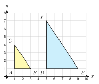

5.3 Similar Triangles
- Decide whether two triangles are similar by AA, SSS, or SAS
- Write a similarity statement in the right order
- Find missing sides in overlapping triangles
- Use distances and slopes on a grid to check similarity
Warm-Up
1. A triangle has angles of 48° and 75°. Find the third angle.
180 − 48 − 75 = 57, so the third angle is 57°.
2. Solve xx + 4 = 35.
5x = 3(x + 4), so 5x = 3x + 12 and 2x = 12. x = 6.
3. Two parallel lines are cut by a transversal. What can you say about corresponding angles?
They are equal.
5.3.1AA Similarity
- The three angles of a triangle add to 180°.
- If two angles of a triangle equal two angles of another triangle, the third angles are equal too.
- AA similarity: two pairs of equal angles make the triangles similar.
a. Find m∠C and m∠F.
b. Are the triangles similar? Write the statement.

a. m∠C = 180 − 50 − 60 = 70°. m∠F = 180 − 50 − 60 = 70°.
b. Two pairs of angles are equal (and the third pair is too). The triangles are similar by AA.
△ ABC ∼ △ DEF
m∠R = 180 − 48 − 82 = 50° and m∠Y = 180 − 48 − 50 = 82°.
∠P = ∠X and ∠R = ∠Z (and ∠Q = ∠Y). Yes, similar by AA. △ PQR ∼ △ XYZ.
5.3.2SSS and SAS Similarity
- SSS similarity: all three pairs of sides are proportional.
- SAS similarity: two pairs of sides are proportional and the included angles are equal.
- The included angle is the angle between the two sides.
Match the shortest with the shortest, and so on.
104 = 2.5, 156 = 2.5, 208 = 2.5
All three ratios are equal. The triangles are similar by SSS.
For 6, 8, 10 and 9, 12, 16: 96 = 1.5, 128 = 1.5, but 1610 = 1.6. The ratios are not all equal. Not similar.
147 = 2, 189 = 2, 2412 = 2. Similar by SSS, with k = 2.
The angle A is between AB and AC. The angle D is between DE and DF.
DEAB = 106 = 53 and DFAC = 159 = 53.
The ratios are equal and the included angles are equal. Similar by SAS. △ ABC ∼ △ DEF.
64 = 1.5 and 1510 = 1.5. The angles K and R are between the sides. Similar by SAS. △ KLM ∼ △ RST.
5.3.3Which Test Works?
- Two angles known: use AA.
- Three sides known: use SSS.
- Two sides and the angle between them: use SAS.
- If the test fails, the triangles are not similar, or you cannot tell.
a. △ ABC: m∠A = 55°, m∠B = 45°. △ XYZ: m∠X = 55°, m∠Y = 45°.
b. △ ABC: AB = 6, BC = 8, AC = 12. △ DEF: DE = 9, EF = 12, DF = 18.
c. △ JKL: JK = 5, KL = 8, m∠K = 70°. △ MNP: MN = 10, NP = 12, m∠N = 70°.
a. AA. △ ABC ∼ △ XYZ.
b. 96 = 128 = 1812 = 1.5. SSS. △ ABC ∼ △ DEF.
c. The angles K and N are between the sides. 105 = 2 but 128 = 1.5. The ratios are not equal. Not similar.
69 = 23 and 812 = 23. The angles are between the sides. SAS. △ ABC ∼ △ DEF.
5.3.4Overlapping Triangles
- If DE ∥ BC, then ∠ADE = ∠ABC because they are corresponding angles.
- The angle at A is shared by both triangles.
- So △ ADE ∼ △ ABC by AA.
- To solve, draw the triangles separately and match the sides.

∠A is shared. ∠ADE = ∠ABC (corresponding angles). So △ ADE ∼ △ ABC by AA.
The big triangle uses the whole side: AB = 6 + 3 = 9.
ADAB = DEBC, so 69 = 8x.
6x = 72, so x = 12.
AB = 12. 912 = 15x, so 9x = 180 and x = 20.
△ ADE ∼ △ ABC by AA.
AB = x + 4 and AC = 6 + 3 = 9.
ADAB = AEAC, so xx + 4 = 69.
9x = 6(x + 4), so 9x = 6x + 24 and 3x = 24.
x = 8. Check: 812 = 69.
55 + x = 410, so 50 = 4(5 + x).
50 = 20 + 4x, so x = 7.5.
5.3.5Similar Triangles on a Grid
- Use the distance formula to find the side lengths and then check the ratios.
- Matching sides that are parallel have equal slopes, so the angles are equal.
- If all three pairs of sides are parallel, use AA.

A(1, 1), B(3, 1), C(1, 4). D(5, 1), E(9, 1), F(5, 7).
AB = 2, AC = 3, BC = √22 + 32 = √13.
DE = 4, DF = 6, EF = √42 + 62 = √52 = 2√13.
DEAB = 2, DFAC = 2, EFBC = 2√13√13 = 2.
All ratios are 2. Similar by SSS, with k = 2.
PQ = 3, PR = 4, QR = 5. ST = 6, SU = 8, TU = √36 + 64 = 10.
63 = 84 = 105 = 2. Similar by SSS.
Slope of PQ: 2 − 04 − 0 = 12. Slope of ST: 4 − 112 − 6 = 12.
Slope of QR: 6 − 22 − 4 = −2. Slope of TU: 10 − 49 − 12 = −2.
Slope of PR: 62 = 3. Slope of SU: 93 = 3.
Every pair is parallel, so the angles are equal. The triangles are similar by AA.
1. If two angles of one triangle equal two angles of another, the triangles are similar by AA.
2. For SSS similarity, all three pairs of sides are proportional.
3. For SAS similarity, two pairs of sides are proportional and the included angles are equal.
4. If DE ∥ BC, then △ ADE ∼ △ ABC because they share ∠A and have corresponding angles.
5. On a grid, use the distance formula to check side ratios and slopes to check for parallel sides.
Practice
Are the triangles similar? If yes, write the statement and the test
1. △ ABC: m∠A = 62°, m∠B = 48°. △ DEF: m∠D = 62°, m∠E = 48°.
Yes, AA. △ ABC ∼ △ DEF
2. △ GHJ: m∠G = 90°, m∠H = 35°. △ KLM: m∠K = 90°, m∠M = 55°.
m∠J = 55° and m∠L = 35°. Yes, AA. △ GHJ ∼ △ KLM
3. △ NPQ: m∠N = 70°, m∠P = 40°. △ RST: m∠R = 70°, m∠S = 60°.
m∠Q = 70° and m∠T = 50°. The angles are 70, 40, 70 and 70, 60, 50. Not similar.
4. One isosceles triangle has a vertex angle of 40°. Another isosceles triangle has base angles of 70°. Are they similar?
The first has base angles 180 − 402 = 70°. The second has vertex angle 180 − 140 = 40°. The angles match. Yes, AA.
Are the triangles similar by SSS? Give the ratios
5. Sides 3, 5, 7 and 9, 15, 21
93 = 155 = 217 = 3. Yes.
6. Sides 4, 6, 9 and 6, 9, 14
1.5, 1.5, but 149 ≈ 1.56. No.
7. Sides 5, 12, 13 and 15, 36, 39
3, 3, 3. Yes.
8. Sides 8, 10, 12 and 12, 15, 19
1.5, 1.5, but 1912 ≈ 1.58. No.
Are the triangles similar by SAS? If you cannot tell, explain
9. AB = 6, AC = 10, m∠A = 50°. DE = 9, DF = 15, m∠D = 50°.
96 = 1510 = 1.5. Yes, SAS.
10. AB = 8, AC = 12, m∠A = 70°. DE = 12, DF = 20, m∠D = 70°.
128 = 1.5 but 2012 ≈ 1.67. Not similar.
11. JK = 5, KL = 7, m∠J = 40°. MN = 10, NP = 14, m∠M = 40°.
The sides are proportional, but ∠J is not between JK and KL. SAS does not apply. We cannot tell.
12. AB = 3, BC = 5, m∠B = 100°. DE = 9, EF = 15, m∠E = 100°.
93 = 155 = 3 and ∠B, ∠E are between the sides. Yes, SAS.
Write the statement
13. m∠P = m∠T and m∠Q = m∠U in △ PQR and △ STU. Write the similarity statement.
∠R matches ∠S. △ PQR ∼ △ TUS
Use the figure. DE ∥ BC

14. Explain why △ ADE ∼ △ ABC. Name the test.
∠A is shared. ∠ADE = ∠ABC (corresponding angles, parallel lines). So the triangles are similar by AA.
15. AD = 4, DB = 2, and DE = 6. Find BC.
AB = 6. 46 = 6BC, so 4 · BC = 36 and BC = 9.
16. AD = 5, AB = 15, and AE = 4. Find AC.
515 = 4AC, so 5 · AC = 60 and AC = 12.
17. AD = x, DB = 3, AE = 6, and EC = 4. Find x.
xx + 3 = 610, so 10x = 6x + 18 and x = 4.5.
18. Mohammed has AD = 4, AB = 10, and DE = 3. He writes 410 = BC3 and gets BC = 1.2. Find his mistake and fix it.
BC is in the big triangle, so it must go over the same side as AB. Correct: 410 = 3BC, so 4 · BC = 30 and BC = 7.5. (BC must be longer than DE.)
Use the coordinate plane
19. A(0, 0), B(6, 0), C(0, 8) and D(2, 2), E(5, 2), F(2, 6). Use the distance formula to show △ ABC ∼ △ DEF. Find k from △ ABC to △ DEF.
AB = 6, AC = 8, BC = 10. DE = 3, DF = 4, EF = 5. Each ratio is 12. Similar by SSS. k = 12.
20. G(0, 0), H(4, 0), J(4, 3) and K(1, −2), L(9, −2), M(9, 4). Use slopes to show the triangles are similar. Find k from △ GHJ to △ KLM.
GH and KL have slope 0. HJ and LM are vertical. GJ has slope 34 and KM has slope 68 = 34. All pairs are parallel, so the triangles are similar by AA. k = KLGH = 84 = 2.
21. A(1, 1), B(4, 1), C(1, 5) and D(6, 1), E(10, 1), F(6, 7). Both triangles have a right angle (A and D). Are they similar? Use side ratios.
DEAB = 43 but DFAC = 64 = 32. The ratios are not equal, so they are not similar.
Real problems
22. A ramp is 12 ft long and rises 1 ft. A post stands under the ramp 8 ft along its length. The post and the ramp make a triangle that is similar to the whole ramp triangle. How tall is the post in inches?
812 = h1, so h = 23 ft. 23 · 12 = 8 in.
23. A pinhole camera is a box 0.2 m deep. A tree is 12 m tall and 30 m from the hole. The tree and its image make similar triangles. How tall is the image in centimeters?
image12 = 0.230, so image = 0.08 m = 8 cm.
24. Lucía says, "Any two right triangles that each have a 30° angle are similar." Is she right? Explain.
Yes. Each triangle has a 90° angle and a 30° angle. That is two pairs of equal angles, so they are similar by AA.
Test Practice
25. In △ ABC and △ DEF, m∠A = m∠D = 50°, AB = 6, AC = 8, and DE = 9. What value of DF shows that △ ABC ∼ △ DEF by SAS?
A. 10
B. 12 ← correct
C. 14
D. 16
26. In △ ABC, point D is on AB and point E is on AC. DE ∥ BC, AD = 6, AB = 10, and DE = 9. What is BC?
A. 5.4
B. 12
C. 15 ← correct
D. 25
Challenge
27. Jamal says, "Any two isosceles triangles are similar." Give a counterexample. Then tell one extra fact that would make two isosceles triangles similar.
Triangle 1 has angles 40°, 70°, 70°. Triangle 2 has angles 100°, 40°, 40°. The angles do not match, so they are not similar. If the two vertex angles are equal, the base angles are equal too, and the triangles are similar by AA.